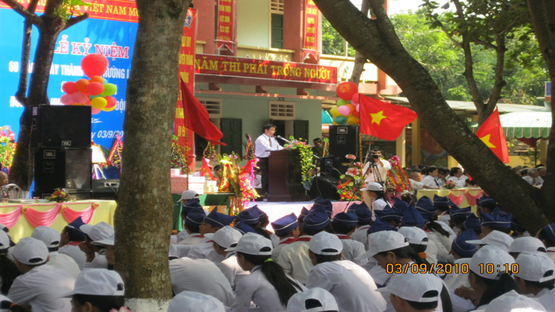

Sáng ngày 20/9/2019, trong không khí náo nức kỷ niệm 60 năm thành lập Trường Đại học Vinh, Viện Sư phạm Tự nhiên đã tổ chức Lễ kỷ niệm 60 năm xây dựng và phát triển Khoa Toán - Ngành Toán (1959 - 2019).

Tham dự có GS.TS.NGƯT. Thái Văn Thành - Ủy viên Ban Chấp hành Đảng bộ tỉnh, Giám đốc Sở Giáo dục và Đào tạo tỉnh Nghệ An; TS.NGƯT. Trần Trung Dũng - Ủy viên Ban Chấp hành Đảng bộ tỉnh, Giám đốc Sở Giáo dục và Đào tạo tỉnh Hà Tĩnh; TS. Hoàng Văn Thi - Phó Giám đốc Sở Giáo dục và Đào tạo tỉnh Thanh Hóa; TS. Nguyễn Ngọc Túy - Giám đốc Sở Khoa học và Công nghệ Thanh Hóa; nhiều nhà khoa học đến từ các viện nghiên cứu, đại học, trường đại học trong cả nước.
Về phía Trường Đại học Vinh có PGS.TS. Nguyễn Huy Bằng - Phó Bí thư Đảng ủy, Phó Hiệu trưởng; PGS.TS. Nguyễn Hoa Du - Đảng ủy viên, Chủ tịch Hội đồng trường; lãnh đạo Trường Đại học Vinh qua các thời kỳ; các đồng chí đại diện Đảng ủy, Công đoàn Trường, Đoàn Thanh niên, Hội sinh viên Trường; Trưởng các khoa, viện, các phòng, ban, trung tâm, trạm; cán bộ, viên chức Viện Sư phạm Tự nhiên cùng đông đảo các thế hệ cán bộ, viên chức, sinh viên, học viên, nghiên cứu sinh Khoa Toán - Ngành Toán.
Tiền thân của Khoa Toán - Ngành Toán Trường Đại học Vinh là Ban Toán - Lý được thành lập, hoạt động cùng lúc với sự ra đời của Phân hiệu Đại học Sư phạm Vinh vào năm 1959. Đội ngũ cán bộ giảng dạy lúc đó mới có 7 người.
Trong quá trình 60 năm xây dựng và trưởng thành với những tên gọi: Ban Toán - Lý, Khoa Toán, Khoa Toán - Tin, Khoa Sư phạm Toán, nay là Ngành Toán - Viện Sư phạm Tự nhiên. Đến nay, ngành Toán đã có 175 cán bộ giảng dạy Toán, Tin; 147 cán bộ giảng dạy các bộ môn khác; 1 nhà giáo được Nhà nước phong tặng danh hiệu Nhà giáo Nhân dân; 24 nhà giáo được Nhà nước phong tặng danh hiệu Nhà giáo Ưu tú; tập thể cán bộ, giảng viên, học viên và sinh viên được tặng thưởng Huân chương Lao động hạng Ba; 1 nhà giáo được trao tặng Huân chương Lao động hạng Nhất và 11 nhà giáo được trao tặng Huân chương Lao động hạng Ba.
Đọc diễn văn buổi lễ, TS. Thiều Đình Phong - Phó Viện trưởng Viện Sư phạm Tự nhiên phụ trách Ngành Toán nhấn mạnh: Nhìn lại những thành quả đạt được của Khoa Toán - Ngành Toán trong thời gian qua, nhiều bài học kinh nghiệm đã được đúc rút sâu sắc qua nhiều thế hệ.
Trong đó, sự đoàn kết thống nhất đồng thuận thực hiện các chủ trương đường lối của Đảng, Nhà nước, sự chỉ đạo sát sao của Ban Giám hiệu nhà trường đối với tập thể cán bộ, giảng viên, học viên, sinh viên là yếu tố then chốt tạo nên sự thành công. Mặt khác, tập thể Khoa Toán - Ngành Toán phải phát huy tính dân chủ, tinh thần tự lực, tự cường vượt qua mọi khó khăn, thử thách, luôn lấy chất lượng và sản phẩm đào tạo, nghiên cứu khoa học làm tiêu chí hàng đầu cho mọi hoạt động dạy học. Thế hệ đi trước có trách nhiệm bồi dưỡng, giúp đỡ thế hệ sau, tạo sự ủng hộ, giúp đỡ thường xuyên trong đội ngũ những người dạy Toán, học Toán ở trong và ngoài trường. Duy trì và phát triển các mối liên kết hợp tác làm việc với các nhà khoa học, các cơ sở đào tạo, trung tâm nghiên cứu có uy tín chất lượng trong nước và quốc tế.